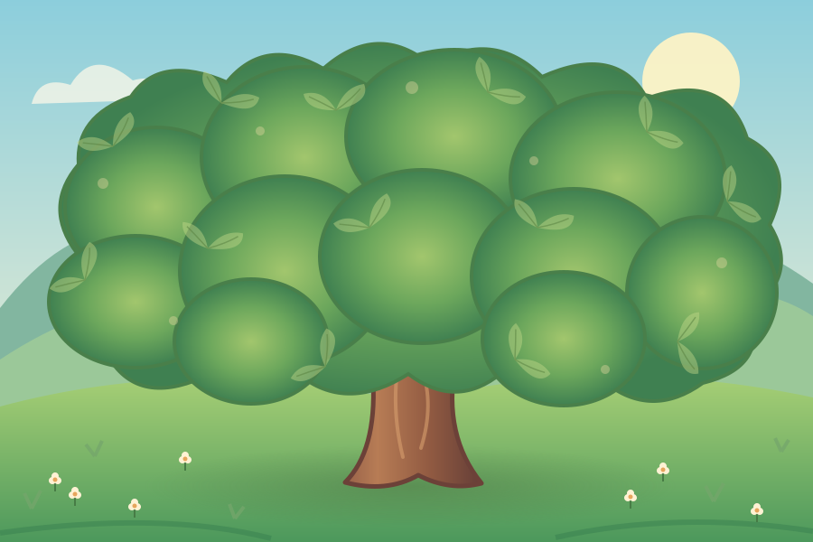

Apple Catcher
Catch fresh apples, dodge the rotten ones and earn a Star Coin for every catch.
Play Apple CatcherGames and More
A little orchard of fruit-themed games.
Catch fresh apples, dodge the rotten ones and earn a Star Coin for every catch.
Play Apple CatcherGrow and harvest cherries, expand your orchard and unlock powerful tree upgrades, even while offline.
Play Cherry Empire
Race the 30-second clock and pick peaches at perfect ripeness.
Play Peach Panic